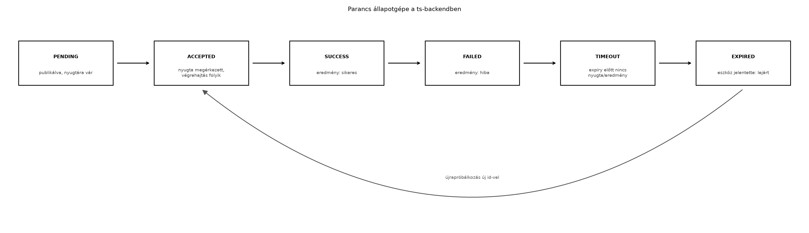

A TerraSense üvegházban a ts-node szenzorcsomópont
nemcsak mér, hanem beavatkozik is: az öntözőszelepet nyitja és zárja. A
felhasználó a felhőből szeretne például egy 10 perces öntözést
elindítani. Ez egy lefelé irányuló parancs: a backend
felől az eszköz felé halad. Az MQTT publish/subscribe modellje
alapvetően az eszköztől a felhő felé tartó telemetriára kényelmes;
lefelé a kézbesítés, a nyugtázás és az időkorlát kezelése külön
tervezést igényel. Ha a parancs elveszik, a felhasználó azt hiheti, hogy
öntözött; ha kétszer hajtódik végre, túlöntözés lehet a vége. Az alvó
eszköz pedig éppen nem figyel a hálózatra, ezért a parancsot késleltetve
kell kézbesíteni.
Ebben az alfejezetben megtervezzük a ts-backend és
ts-node közötti parancsutat: szabványos parancsüzenetet,
nyugtázási és eredményjelentési protokollt, backend oldali állapotgépet,
és az alvó eszközök kezelését.
Definíció. A parancs (command) a backend által kibocsátott, egy adott eszköznek címzett üzenet, amely egy művelet végrehajtását kéri. A TerraSense parancsüzenete legalább az alábbi mezőket tartalmazza:
id: a parancs egyedi azonosítója, amelyet a backend
generál (UUID vagy monoton növekvő szám). Ezzel hivatkozunk a nyugtára
és az eredményre, és ezzel biztosítjuk az idempotenciát.type: a művelet neve, például valve.open
vagy valve.close.params: típusfüggő paraméterobjektum, például
{"duration_ms": 600000}.expiry: a parancs lejárati ideje, UTC epoch ms. Ha az
eszköz eddig nem tudta elfogadni vagy végrehajtani a parancsot, hagyja
figyelmen kívül.timestamp (opcionális): a kibocsátás ideje,
hibakereséshez.A topic-konvenció az MQTT QoS, munkamenetek, retain, Last Will és MQTT 5 alfejezetben rögzített: a parancs az
terrasense/gh1/n001/cmdtopicra kerül, az eredmény pedig a
terrasense/gh1/n001/cmd/resulttopicra. Mindkét topic QoS 1, retain=false.
Példa parancs JSON-üzenetre:
{
"id": "c7d2f9a0-3b21-4f15-9e2f-6f9d2a3c1e4b",
"type": "valve.open",
"params": {
"duration_ms": 600000
},
"expiry": 1735689600000,
"timestamp": 1735689000000
}A parancsazonosító akkor is egyedi marad, ha a backend újraindul;
UUID használata esetén nincs szükség központi számlálóra. Ha egy
parancsot újra kell küldeni (például a backend újraindul, vagy az eszköz
nem nyugtázta), ugyanazt az id-t kell megtartani.
A parancs életciklusa a backendben egy állapotgéppel írható le. A nyugta (acknowledgement, ACK) azt jelenti, hogy az eszköz megkapta és értelmezni tudta a parancsot; az eredmény (result) pedig a végrehajtás utáni állapotot jelenti. A kettő szétválasztása azért fontos, mert a végrehajtás hosszú lehet (például a szelep 10 percig nyitva marad), és a felhasználó előbb szeretné tudni, hogy a parancs eljutott-e.
A ts-backend a következő állapotokat tartja nyilván
minden parancsra:
PENDING: a parancsot a REST API fogadta, de még nem
publikáltuk MQTT-n, vagy publikáltuk, de nem érkezett nyugta.ACCEPTED: az eszköz nyugtázta a parancsot; a
végrehajtás folyamatban van.SUCCESS: az eszköz eredményt küldött, a végrehajtás
sikeres volt.FAILED: az eszköz eredményt küldött, de a végrehajtás
hibára futott.TIMEOUT: a parancs az expiry időpontig nem
kapott nyugtát vagy eredményt.EXPIRED: az eszköz jelezte, hogy a parancs lejárt,
mielőtt végrehajthatta volna (például alvásból ébredve látta, hogy az
expiry már elmúlt).Az átmeneteket az alábbi flow ábra mutatja.

Átmenettáblázattal:
| Jelenlegi állapot | Esemény | Következő állapot |
|---|---|---|
PENDING |
ACK érkezik az eszköztől | ACCEPTED |
PENDING |
eredmény érkezik ACK nélkül (rövid parancs) | SUCCESS vagy FAILED |
PENDING |
expiry lejár |
TIMEOUT |
ACCEPTED |
eredmény érkezik | SUCCESS vagy FAILED |
ACCEPTED |
expiry lejár |
TIMEOUT |
PENDING vagy ACCEPTED |
az eszköz EXPIRED-et küld |
EXPIRED |
A ts-backend a parancsokat memóriában tárolja
(ConcurrentHashMap), és ütemezetten ellenőrzi a lejáratot.
A nyugta és az eredmény ugyanazon a cmd/result topicon
érkezik, és a parancsazonosító alapján azonosítja a backend, melyik
parancshoz tartozik. A nyugta és az eredmény szétválasztható a
status mezővel:
{
"id": "c7d2f9a0-3b21-4f15-9e2f-6f9d2a3c1e4b",
"status": "ACCEPTED",
"node_id": "n001",
"timestamp": 1735689001000
}Egy későbbi eredményüzenet:
{
"id": "c7d2f9a0-3b21-4f15-9e2f-6f9d2a3c1e4b",
"status": "SUCCESS",
"result": {
"valve_opened_ms": 600000
},
"node_id": "n001",
"timestamp": 1735689605000
}Definíció. Az idempotens
parancsvégrehajtás azt jelenti, hogy ugyanaz a parancsazonosító
többszöri kézbesítés esetén is legfeljebb egyszer vált ki hatást. Az
eszköz oldalán ezt a parancsazonosító megjegyzésével és a már
feldolgozott azonosítók halmazával érjük el (a
valve_set_target már idempotens a Aktuátorok: biztonságos vezérlés és visszajelzés
alfejezetből). Ha az eszköz egy SUCCESS eredményt adott, és
ugyanaz a parancs ismét megérkezik (például MQTT QoS 1 miatt), az eszköz
nem hajtja végre újra, csak újraküldi az eredményt.
Az MQTT 5 szabvány bevezet egy explicit request–response mintát: a
Response Topic és a Correlation Data user
property-k segítségével a kliens megadhatja, hova várja a választ, és
hogyan korrelálja a kéréssel. Ez különösen akkor hasznos, ha sok parancs
fut párhuzamosan, és nincs természetes topic-szétválasztás.
A TerraSense-ben azonban az eszközönkénti topic-struktúra
(cmd és cmd/result) eleve biztosítja a
korrelációt, és a parancsüzenetben szereplő id mező erre
elég. Az MQTT 5 feature-öket akkor érdemes bevetni, ha:
A döntést a következő táblázat foglalja össze:
| Szempont | Topic-alapú cmd/cmd/result |
MQTT 5 response topic |
|---|---|---|
| Egyszerűség | egyszerű, konvencióval rögzíthető | több metaadatot igényel |
| Skálázhatóság | eszközönként jó, központi válaszgyűjtőnél szűrés kell | korrelációs adat megkönnyíti a szűrést |
| MQTT verzió | 3.1.1 is támogatja | csak MQTT 5 kliens és broker |
| Fejlesztési hiba lehetősége | elgépelt topic, hiányzó feliratkozás | helytelen correlation data |
| TerraSense-ben | választott megoldás | nem használjuk a TerraSense-ben |
Az energiatakarékos ts-node az idő nagy részében alvó
állapotban van, és csak mintavételre vagy ébredési időzítőre kapcsolja
be a rádiót. Ilyenkor egy azonnali parancs nem ér el hozzá. Két alapvető
stratégia létezik:
Retained parancs a cmd topicra. Az
MQTT retained üzenet az utolsó értéket tárolja a broker, és minden új
feliratkozó megkapja. Ha a parancs retained, az alvó eszköz ébredéskor
feliratkozik, és azonnal megkapja. Hátránya: csak egyetlen parancs
tárolható, és ha új parancs érkezik, felülírja a régit. Ráadásul a
lejárt parancs retained maradhat, és az eszköz feleslegesen kap egy
elavult parancsot. Az expiry mezőt ilyenkor muszáj
ellenőrizni.
Backend oldali parancssor. A backend eltárolja a
függő parancsokat, és amikor az eszköz felébred (például MQTT
status üzenettel jelzi), a backend leküldi a következő
érvényes parancsot. Ez rugalmasabb, több parancsot is tárolhat, és
lejárat szerint rendezhet. Hátránya: a backendnek tudnia kell az eszköz
ébredéséről, és a kézbesítés késleltetése a backend–eszköz ciklusból
adódik.
A TerraSense-ben a retained parancsot használjuk a
következő ébredéskor végrehajtandó parancsra, de a cmd
topic retain=false alapbeállítását nem
módosítjuk; ehelyett a backend figyeli az eszköz status
jelenlétét, és akkor publikálja a függő parancsot. Ezzel elkerüljük az
elavult retained parancsokat, és megtartjuk a parancsok sorrendjét. A
laborban ezt a backend oldali CommandScheduler valósítja
meg: amikor az eszköz status üzenete megérkezik, a backend
lekéri az adott eszközre váró, nem lejárt parancsokat, és sorban
publikálja őket.
Továbbvitt eredmény. A parancs- és eredménytopicok,
valamint a parancsazonosítóval történő korreláció később az Eszközárnyék és digitális iker: kívánt és jelentett
állapot alfejezetben a kívánt állapot (desired)
kézbesítésére, a Záróprojekt: a teljes TerraSense
rendszer összeállítása és átvétele alfejezetben pedig a teljes
parancsút integrációjára épül.
Ebben a laborban a ts-backend REST API-ján keresztül
küldünk egy valve.open parancsot. A backend MQTT-n
publikálja a terrasense/gh1/n001/cmd topicra. A
ts-node-t egy egyszerű Python MQTT-kliens szimulálja, mert
a Zephyr native_sim MQTT-stack integrációját az MQTT a gyakorlatban: Zephyr-kliens és Mosquitto
alfejezetben már elvégeztük; a labort a backendre és a protokollra
fókuszáljuk. A szimulátor feliratkozik a cmd topicra,
végrehajtja a szelepnyitást (szimulált GPIO), nyugtát küld, majd a
végrehajtás után eredményt a cmd/result topicra.
Munkakönyvtár:
mkdir -p ~/iot-labor/i049 && cd ~/iot-labor/i049
cp -r ../i043 ts-backend
mkdir -p ts-backend/src/main/java/com/terrasense/backend/{command,mqtt}A ts-backend a A ts-backend váza:
REST API és egészségellenőrzés alfejezetben elkészített Spring Boot
váza. A Maven pom.xml-hez adjuk hozzá az Eclipse Paho Java
kliens függőséget:
<dependency>
<groupId>org.eclipse.paho</groupId>
<artifactId>org.eclipse.paho.client.mqttv3</artifactId>
<version>1.2.5</version>
</dependency>Ellenőrzési igény: a Paho Java kliens pontos verziója a telepített Maven repository-tól függ.
A parancsmodell és az állapotgép osztálya:
// src/main/java/com/terrasense/backend/command/CommandState.java
package com.terrasense.backend.command;
public enum CommandState {
PENDING, ACCEPTED, SUCCESS, FAILED, TIMEOUT, EXPIRED
}// src/main/java/com/terrasense/backend/command/DeviceCommand.java
package com.terrasense.backend.command;
import java.util.Map;
import java.util.UUID;
public record DeviceCommand(
String id,
String nodeId,
String type,
Map<String, Object> params,
long expiry,
CommandState state
) {
public static DeviceCommand create(String nodeId, String type,
Map<String, Object> params, long ttlMs) {
long now = System.currentTimeMillis();
return new DeviceCommand(UUID.randomUUID().toString(), nodeId,
type, params, now + ttlMs, CommandState.PENDING);
}
}A CommandService felel a parancs tárolásáért,
MQTT-publikálásért és az eredmény fogadásáért. Az MQTT kapcsolatot egy
MqttCommandGateway osztály kezeli. A laborban a teljes
MQTT-kliens kódot mutatjuk be röviden:
// src/main/java/com/terrasense/backend/mqtt/MqttCommandGateway.java
package com.terrasense.backend.mqtt;
import org.eclipse.paho.client.mqttv3.*;
import org.eclipse.paho.client.mqttv3.persist.MemoryPersistence;
import com.terrasense.backend.command.*;
import java.util.Map;
import java.util.concurrent.ConcurrentHashMap;
public class MqttCommandGateway implements MqttCallback {
private final MqttClient client;
private final Map<String, DeviceCommand> pending = new ConcurrentHashMap<>();
public MqttCommandGateway(String brokerUrl, String clientId) throws Exception {
client = new MqttClient(brokerUrl, clientId, new MemoryPersistence());
client.connect();
client.setCallback(this);
// Feliratkozás az összes node cmd/result topicjára
client.subscribe("terrasense/+/+/cmd/result", 1);
}
public void publishCommand(DeviceCommand cmd) throws Exception {
pending.put(cmd.id(), cmd);
String topic = "terrasense/gh1/" + cmd.nodeId() + "/cmd";
String payload = """
{"id":"%s","type":"%s","params":%s,"expiry":%d}
""".formatted(cmd.id(), cmd.type(), cmd.params(), cmd.expiry());
MqttMessage msg = new MqttMessage(payload.getBytes());
msg.setQos(1);
client.publish(topic, msg);
}
@Override
public void messageArrived(String topic, MqttMessage message) throws Exception {
// cmd/result feldolgozása: nyugta vagy eredmény
String json = new String(message.getPayload());
// Egyszerű feldolgozás Jacksonnal (a ts-backend vázban elérhető)
// Frissíti a pending map állapotát a status mező alapján.
}
@Override
public void connectionLost(Throwable cause) { /* újracsatlakozás */ }
@Override
public void deliveryComplete(IMqttDeliveryToken token) { /* QoS 1 nyugta */ }
}A REST vezérlő:
// src/main/java/com/terrasense/backend/controller/CommandController.java
package com.terrasense.backend.controller;
import com.terrasense.backend.command.*;
import org.springframework.web.bind.annotation.*;
@RestController
@RequestMapping("/api/devices/{nodeId}/commands")
public class CommandController {
private final CommandService commandService;
public CommandController(CommandService commandService) {
this.commandService = commandService;
}
@PostMapping
public DeviceCommand createCommand(@PathVariable String nodeId,
@RequestBody Map<String, Object> body) {
String type = (String) body.get("type");
Map<String, Object> params = (Map<String, Object>) body.get("params");
long ttlMs = body.containsKey("ttl_ms") ? ((Number) body.get("ttl_ms")).longValue() : 30000;
return commandService.createAndPublish(nodeId, type, params, ttlMs);
}
}A szimulált ts-node Pythonban, a ts-node-sim.py
fájlban:
#!/usr/bin/env python3
import json, time, uuid, paho.mqtt.client as mqtt
BROKER = "localhost"
CMD_TOPIC = "terrasense/gh1/n001/cmd"
RESULT_TOPIC = "terrasense/gh1/n001/cmd/result"
def on_connect(client, userdata, flags, rc):
client.subscribe(CMD_TOPIC, qos=1)
def on_message(client, userdata, msg):
cmd = json.loads(msg.payload)
print("Parancs érkezett:", cmd)
# Nyugta
ack = {"id": cmd["id"], "status": "ACCEPTED", "node_id": "n001",
"timestamp": int(time.time()*1000)}
client.publish(RESULT_TOPIC, json.dumps(ack), qos=1)
# Szelepnyitás szimulálása
duration = cmd.get("params", {}).get("duration_ms", 0)
time.sleep(duration / 1000.0)
result = {"id": cmd["id"], "status": "SUCCESS",
"result": {"valve_opened_ms": duration},
"node_id": "n001", "timestamp": int(time.time()*1000)}
client.publish(RESULT_TOPIC, json.dumps(result), qos=1)
client = mqtt.Client("ts-node-sim")
client.on_connect = on_connect
client.on_message = on_message
client.connect(BROKER, 1883, 60)
client.loop_forever()A futtatáshoz indítsuk el a Mosquitto brokert a közös stackből, majd a backendet és a szimulátort.
# Mosquitto indítása a ~/iot-labor/stack segítségével
docker compose -f ~/iot-labor/stack/compose.yaml up -d mosquitto
# Backend build és futtatás
cd ~/iot-labor/i049/ts-backend && mvn spring-boot:run
# Szimulátor egy másik terminálban
cd ~/iot-labor/i049 && python3 ts-node-sim.py
# Parancs küldése
curl -X POST http://localhost:8080/api/devices/n001/commands \
-H "Content-Type: application/json" \
-d '{"type":"valve.open","params":{"duration_ms":10000},"ttl_ms":30000}'Várt kimenet a backend logjában: a parancs PENDING, majd
ACCEPTED, végül SUCCESS állapotba kerül. A
szimulátor termináljában megjelenik a parancs és a nyugta. A
szelepnyitás után az eredmény a cmd/result topicra
kerül.
Takarítás:
docker compose -f ~/iot-labor/stack/compose.yaml downA labor során létrehozott fájlok:
ts-backend/src/main/java/com/terrasense/backend/command/CommandState.java,
DeviceCommand.java, CommandService.java,
MqttCommandGateway.java,
CommandController.java, valamint a
ts-node-sim.py. A ~/iot-labor/i049 könyvtár
marad.
A parancsút működését a backend naplójában a parancsazonosítóval és
az állapotváltásokkal ellenőrizhetjük. A Mosquitto log
(docker logs mosquitto) mutatja a publikált üzenetek
topicjait és QoS-ét. A szimulátor print kimenete igazolja,
hogy a nyugta és az eredmény megérkezett.
Tipikus hibatünetek:
| Hibatünet | Lehetséges ok | Javítás |
|---|---|---|
A parancs PENDING marad |
Az eszköz nincs feliratkozva a cmd topicra, vagy a
topic elgépelt |
Ellenőrizze a szimulátor feliratkozását és a topic prefixet |
| A nyugta megérkezik, de nincs eredmény | A szimulátor kivételt dob a sleep közben, vagy a
backend nem figyeli a cmd/result topicot |
Vizsgálja a szimulátor stderr-jét, ellenőrizze a wildcard feliratkozást |
| Duplikált parancs végrehajtás | Az eszköz nem jegyzi meg a feldolgozott azonosítókat | Vezessen be processed_ids halmazt az eszköz
oldalán |
Az expiry lejár, de a parancs nem
TIMEOUT |
Nincs ütemezett lejárat-ellenőrzés a backendben | Implementáljon @Scheduled taskot az elavult parancsok
lezárására |
| Az alvó eszköz nem kap parancsot | A backend nem várja meg az eszköz ébredését, vagy retained nélkül publikál | Használja a backend oldali parancssort, és publikáljon a
status üzenet hatására |
A nyugta és az eredmény összemosása. Ha csak egy
üzenetet várunk a végrehajtás végén, a felhasználó hosszú ideig nem
tudja, hogy a parancs eljutott-e. A szelepnyitásnál ez különösen zavaró:
a ACCEPTED nyugta nélkül a backend nem tudja
megkülönböztetni a hálózati hibát a lassú végrehajtástól.
Az idempotencia elhanyagolása. Az MQTT QoS 1
legalább egyszer kézbesít, tehát duplikátumok előfordulhatnak. Ha az
eszköz minden valve.open parancsra újra kinyitja a
szelepet, a duplikátum túlöntözést okoz. A parancsazonosító alapú
deduplikáció kötelező.
Elavult retained parancs. Ha valaki mégis
retained cmd üzenetet használ, és az eszköz ébredéskor
feltétel nélkül végrehajtja, egy régi, lejárt parancs váratlan hatást
válthat ki. Az expiry mezőt mindig ellenőrizni
kell.
A lejárati idő helytelen megválasztása. Ha az
expiry túl rövid, az alvó eszköz ébredése előtt lejár; ha
túl hosszú, a felhasználó sokáig bizonytalanságban marad. A lejárati
időt az eszköz alvási periódusához és a hálózati késleltetéshez kell
igazítani.
Miért nem elegendő a parancs cmd topicra történő QoS 1
publikálása a megbízható parancskézbesítéshez? Milyen további
mechanizmusokra van szükség a végrehajtás igazolásához és a duplikátumok
kezeléséhez?
Egy ts-node percenként egyszer ébred fel, és 5
másodpercig hallgatja a rádiót. A backend egy valve.open
parancsot akar kézbesíteni. Az átlagos hálózati késleltetés MQTT-ben 200
ms, a maximális késleltetés 2 s. Mekkora legyen a parancs
expiry értéke, ha a parancsot a lehető leghamarabb végre
akarjuk hajtani, de nem akarunk feleslegesen hosszú várakozást?
Indokoljon.
Egészítse ki a ts-backend CommandService
osztályát úgy, hogy a cmd/result topicról érkező
EXPIRED állapotú eredmény esetén naplózza az eseményt, és a
parancsot EXPIRED állapotba állítsa. Készítsen
egységtesztet a CommandService állapotátmenetére.
A labor során a parancs ACCEPTED állapotban marad, de
SUCCESS soha nem érkezik. A szimulátor naplója szerint a
nyugta elküldésre került. Hol keresse a hibát? Soroljon fel legalább
három lehetséges okot, és mindegyikhez adjon ellenőrzési lépést.
A QoS 1 csak a brokerbe történő kézbesítést garantálja, de nem garantálja, hogy az eszköz megkapta, és azt sem, hogy végrehajtotta. A nyugta (ACK) igazolja a kézbesítést az eszközig, az eredményüzenet pedig a végrehajtás sikerességét. A duplikátumok ellen a parancsazonosító alapú deduplikáció véd. Az időkorlát (expiry) pedig jelzi, ha a parancs nem hajtható végre értelmes időn belül.
Az eszköz legfeljebb 60 s + 5 s = 65 s alatt ébred fel és hallgatja a
rádiót. A hálózati késleltetés maximuma 2 s, tehát a legrosszabb esetben
a parancs 65 s + 2 s = 67 s múlva juthat el az eszközhöz. A végrehajtás
(például a szelepnyitás) további időt vehet igénybe, ami a feladat
szerint rövid, de vegyünk hozzá 1 s tartalékot. Így az
expiry-t legalább 68 s-ra kell állítani. Ugyanakkor ha a
parancs ennél hosszabb ideig nem jut el, a felhasználót értesíteni kell.
Érdemes az expiry-t 70 s környékére választani, hogy a
lejárat ne következzen be a normál kézbesítés során, de ne is hagyja a
felhasználót túl sokáig bizonytalanságban.
A CommandService bővítése az EXPIRED
esemény kezelésére:
public void handleResult(String json) {
// JSON feldolgozás Jacksonnal (itt leegyszerűsítve)
Map<String, Object> result = jsonToMap(json);
String id = (String) result.get("id");
String status = (String) result.get("status");
DeviceCommand cmd = pending.get(id);
if (cmd == null) return;
if ("ACCEPTED".equals(status)) {
cmd = new DeviceCommand(cmd.id(), cmd.nodeId(), cmd.type(),
cmd.params(), cmd.expiry(), CommandState.ACCEPTED);
} else if ("SUCCESS".equals(status)) {
cmd = new DeviceCommand(cmd.id(), cmd.nodeId(), cmd.type(),
cmd.params(), cmd.expiry(), CommandState.SUCCESS);
} else if ("FAILED".equals(status)) {
cmd = new DeviceCommand(cmd.id(), cmd.nodeId(), cmd.type(),
cmd.params(), cmd.expiry(), CommandState.FAILED);
} else if ("EXPIRED".equals(status)) {
log.warn("Parancs lejárt: {}", id);
cmd = new DeviceCommand(cmd.id(), cmd.nodeId(), cmd.type(),
cmd.params(), cmd.expiry(), CommandState.EXPIRED);
}
pending.put(id, cmd);
}Az egységteszt Mockito-val vagy a CommandService
tesztpéldányával ellenőrzi, hogy egy EXPIRED eredmény
hatására a parancs állapota EXPIRED-re változik, és a
logban megjelenik a figyelmeztetés.
Lehetséges okok és ellenőrzésük:
cmd/result
topicra. Ellenőrizze a MqttCommandGateway
konstruktorában a subscribe hívást; a wildcard
terrasense/+/+/cmd/result lefedi-e a
terrasense/gh1/n001/cmd/result topicot.id-t küld a nyugtában, mint az
eredményben. Hasonlítsa össze a nyugta és az eredmény
id mezőjét; ha nem egyezik, a backend nem tudja a
parancshoz kötni.time.sleep alatt,
és nem jut el az eredményküldésig. Nézze meg a szimulátor
stderr-jét; kezelje a kivételeket, és mindig küldjön FAILED
eredményt hiba esetén.expiry lejárt, mielőtt az eredmény
megérkezett volna, és a backend nem frissítette
TIMEOUT-ra. Ellenőrizze az ütemezett
lejáratkezelést, és hogy az eredmény később érkezik-e a lejáratnál.A ts-backend parancsútja a
terrasense/<site>/<node>/cmd topicra publikál,
az eszköz pedig a cmd/result topicra küld nyugtát és
eredményt. A parancsüzenet az id, type,
params, expiry mezőket tartalmazza. A backend
állapotgépe PENDING, ACCEPTED,
SUCCESS, FAILED, TIMEOUT,
EXPIRED állapotokat kezel, és ütemezetten ellenőrzi a
lejáratot. Az alvó eszközök parancsait a backend a status
üzenet észlelésekor, sorban publikálja. A laborban a
ts-backend REST API-val fogad parancsot, MQTT-n publikál,
és egy Python szimulátor hajtja végre a szelepnyitást. A kulcsfájlok:
CommandState.java, DeviceCommand.java,
CommandService.java, MqttCommandGateway.java,
CommandController.java, ts-node-sim.py.
Továbbvitt eredmény. A parancsazonosítóval történő
korreláció, a cmd és cmd/result topicok,
valamint az állapotgép az Eszközárnyék és digitális
iker: kívánt és jelentett állapot alfejezetben a kívánt állapot
kézbesítésére, a Záróprojekt: a teljes TerraSense
rendszer összeállítása és átvétele alfejezetben a teljes parancsút
integrációjára épül.
Az MQTT publish/subscribe és QoS 1 definíciói az MQTT 3.1.1 és MQTT
5.0 szabványokon alapulnak. A Paho Java kliens, a Python
paho-mqtt és a Spring Boot verziók gyorsan változnak;
használat előtt ellenőrizze a pontos verziókat és kompatibilitást. Az
MQTT 5 request–response minta a szabvány Response Topic és
Correlation Data user property-ire épül, de a
TerraSense-ben a saját topic-konvenciót használjuk. A laborban szimulált
eszköz nem helyettesíti a valós Zephyr native_sim eszközt;
a teljes eszközszoftvert az MQTT a gyakorlatban:
Zephyr-kliens és Mosquitto alfejezet szerint kell integrálni.